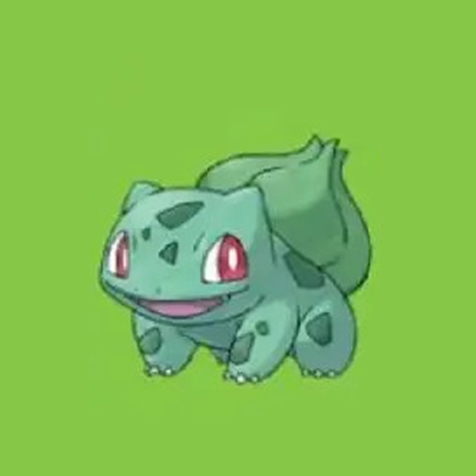

Introdução: Pokémon: Jogos, Anime, Cartas e Mangá

Pokémon é uma franquia muito famosa em boa parte do mundo por conta da sua publicidade, de seus produtos, jogos etc. A franquia foi criada por Satoshi Tajiri em 1995, a franquia em um breve resumo é um mundo de monstrinhos, na qual convivem com humanos e vivem em harmonia, tendo seus diferentes ecossistemas, espécies, batalhas etc. No tópico a seguir, serão apresentados os jogos e o principal andamento deles.
Jogos e o seu principal andamento.
Os jogos sempre começam com um professor te apresentando o mundo Pokémon, depois é perguntado quem é você, então você escolhe o nome e se seu personagem é feminino ou masculino e por fim é apresentado o nosso rival.
Eles tem uma mesma base, na qual temos o protagonista saindo de casa começando sua longa jornada, onde no meio do caminho conhece seu rival e depois escolhe o seu Pokémon, enfrentam-se numa batalha e depois você começa sua jornada que você tem que pegar mais pokémon para ficar mais forte e enfrentar os 8 ginásios para depois acabar com a elite dos quatro e derrotar o campeão. A história sempre muda a cada jogo.
Logo abaixo possui uma foto de alguns do iniciais, que lembrando, nessa base que os jogos têm, são pokémon do tipo grama, fogo e água (excessão para Pokémon Yellow, Let's go Pikachu e Let's go Eevee).
|  | ||
O anime e sua popularidade.
Anime ou desenho do Pokémon, o que é que for, é muito famoso por conta de fazer parte da infância de muitos, pelo fato de que estreou e 1997 e continua com seus episódios até os dias de hoje. Cada anime tem seu protagonista, e o anime de Pokémon não podia ser diferente, tendo o Ash Ketchum ou em japonês Satoshi, como personagem principal. Porém nem tudo são flores, pois Ash se despede dos espectadores em 2023 dando final a sua jornada de 25 anos.
Cartas pokémon, torneios, investimentos e coleções.
TCG, Training Card Game, cartas colecionáveis de diversas franquias viram febre em todo lugar e com Pokémon não foi diferente. Com mais de 20 anos de história, as cartas estão presentes em todo lugar até os dias de hoje, onde você pode colecionar, investir e jogar com elas.
Mangá de Pokémon, por que é tão esquecido?

Uma parte muito boa da franquia que ou muitos fãs esquecem, desconhecem ou ignoram, mas por que? Diferentemente dos jogos, cartas ou do anime, o mangá não tem uma grande publicidade e nem um grande público, consequentemente, ninguém se lembra do mangá.
Qual o treinador principal da franquia de Pokémon?
Muitos irão dizer que o Ash seria o personagem principal. Muito provavelmente, porque participou de todas as ligas pokémon até a 8° geração, Galar, porém a sua aparição principal é apenas no anime, por conta que nos jogos ele não existe e no mangá, ele não é o protagonista, tanto que tem poucas histórias dele por lá. Então já que sabemos que o Ash Ketchum não é o personagem principal da FRANQUIA, logo cai a questão. Quem é o protagonista?
E a grande resposta é....... Red
Mas por que Red?
O treinador Red seria o protagonista da franquia de Pokémon por ser o primeiro personagem que controlamos, nos jogos de Red, Green, Blue e Yellow. Não só por isso, mas também pelo fato de vermos ele nos jogos Gold, Silver, Crystal, Black & White 2, Ultra Sun e Ultra moon. Já nos remakes, vemos Red em HeartGold, SoulSilver, Let's go Eevee e Let's go Pikachu. Essa são todas as aparições deles, somente nos jogos, isso porque não foi sitado em Pokémon Masters, mas e no anime e no mangá? No anime, ele tem um spin-off inteiro focado nele, contando enfim, sua jornada no anime que é diferente dos jogos. Já no mangá, Red, é protagonista do primeiro arco do mangá e depois faz breve aparições nos próximos arcos, sendo um personagem secundário.